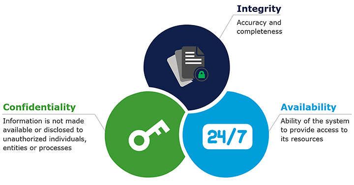

The Importance of Cybersecurity in the Digital Age
the digital age, cybersecurity has become a critical concern for
individuals, businesses, and governments around the world. With the
growing number of cyber threats such as data breaches, phishing
attacks, and malware infections, it is essential to have robust
cybersecurity measures in place to protect against these threats.
The importance of cybersecurity lies in the fact that it helps to
safeguard sensitive data and prevent unauthorized access to critical
systems and networks. In today's world, data is a valuable asset,
and businesses and governments rely heavily on the security of their
data to maintain their operations and competitive edge.
Cybersecurity helps to ensure that data is protected from theft,
tampering, or loss, which can have severe consequences.
Cybersecurity is also essential to maintain the integrity and
availability of critical systems and networks. In many cases, cyber
attacks are not just aimed at stealing data, but also disrupting
operations or causing damage to infrastructure. Cybersecurity
measures can help to detect and prevent these attacks, preventing
significant disruptions and damages. The importance of cybersecurity
is not just limited to businesses and governments but also extends
to individuals. In today's world, we rely heavily on technology for
communication, financial transactions, and other activities.
Cybersecurity helps to protect our personal information from theft
and misuse, preventing identity theft and financial fraud. The
growing importance of cybersecurity has led to the development of a
wide range of cybersecurity tools and technologies, such as
firewalls, antivirus software, intrusion detection systems, and
encryption algorithms. However, despite these advances,
cybersecurity threats continue to evolve and become more
sophisticated, making it essential to remain vigilant and proactive
in the fight against cyber threats. In conclusion, cybersecurity is
critical in the digital age, and it is essential to have robust
cybersecurity measures in place to protect against cyber threats.
The importance of cybersecurity extends beyond businesses and
governments to individuals, and it is essential to remain aware of
the risks and take appropriate steps to protect ourselves and our
data. By staying informed and proactive, we can help to create a
safer and more secure digital world.
1. Why is Cyber Security Important?

One of the biggest reasons why cybersecurity is so essential is because it protects sensitive data against theft
and loss. With the increasing reliance on technology, everything from personal information to critical infrastructure
is at risk of being compromised by cybercriminals. Sensitive data, such as protected health information (PHI), personally
identifiable information (PII), intellectual property, personal information, data, and government and business information
systems are all included. Without proper cybersecurity measures in place, this data is vulnerable to cyber threats,
which can result in identity theft, financial fraud, and reputational damage. It's crucial for cybersecurity specialists
to work tirelessly
to prevent these types of attacks and protect sensitive information from falling into the wrong hands.
2. What are the Challenges of Cyber Security?
Artificial intelligence is rapidly becoming a crucial component of modern technology, but its development is not without
challenges. One of the most significant issues is the potential for bias in AI systems.
If the data sets used to train an AI model are biased, the model will also be biased, which could have serious
consequences for the individuals or groups affected by the system's decisions. Additionally, the increasing
sophistication of AI also raises concerns about the potential for autonomous systems to make decisions that go against
ethical or moral principles. As AI becomes more integrated into our daily lives, it is crucial to ensure that
the technology is developed and implemented in a responsible and ethical manner to avoid harmful outcomes.
3. How to Manage Cyber Security

Cyber security is a critical concern for individuals and businesses alike.
To ensure that your digital assets remain secure, it is essential to adopt a proactive approach to cyber security.
One of the most effective ways to do this is by maintaining the latest version of your software. Additionally,
using anti-virus software and a firewall can help protect your devices against malware and other cyber threats.
It's also crucial to utilize strong passwords and a password management tool to keep your accounts safe.
Consider adopting two-factor or multi-factor authentication for an additional layer of security. Finally,
it's important to be aware of phishing scams and to exercise caution when receiving unsolicited emails, phone calls,
or pamphlets. By implementing these best practices, you can take a proactive approach to cyber security and safeguard
your digital assets against potential threats.
4. What does cybersecurity mean for your business?

In today's digital age, security measures play a crucial role in safeguarding various electronic systems and networks
from malicious attacks, illegal access, and improper use. Whether you operate a business or use personal devices,
it is imperative to take proactive steps towards cybersecurity to keep your data protected from potential hackers.
One of the most effective ways to achieve this is by utilizing anti-malware and antivirus protection software,
which can help keep dangerous actors out of your machine. By implementing strong security measures, you can significantly
reduce the risk of cyber-attacks and safeguard your digital assets against potential threats.
5. What are the 5 types of cyber security?

Cybersecurity is a vital aspect of modern-day digital operations, and there are various types of cybersecurity
measures that one can undertake to protect their devices and networks from potential threats.
The five main types of cybersecurity are application security, critical infrastructure security,
network security, Internet of Things (IoT) security, and cloud security. Application security involves securing
applications from potential threats and ensuring that they operate as intended. Critical infrastructure security
aims to protect the critical infrastructure and systems that are essential to the functioning of society.
Network security involves securing networks and their components against potential threats such as malware, viruses,
and unauthorized access. IoT security aims to secure IoT devices and systems from potential cyber-attacks, while cloud security involves protecting cloud computing systems from cyber threats and ensuring the confidentiality, integrity, and availability of data stored in the cloud. By implementing robust cybersecurity measures across all these areas, individuals and businesses can significantly reduce the risk of cyber-attacks and protect their digital assets from potential threats.